五、数据的完整性¶
作用：保证用户输入的数据保存到数据库中是正确的。
确保数据的完整性 = 在创建表时给表中添加约束
完整性的分类：
- 实体完整性:
- 域完整性:
- 引用完整性:
1、实体完整性¶
实体：即表中的一行(一条记录)代表一个实体（entity）
实体完整性的作用：标识每一行数据不重复。
约束类型： 主键约束（primary key) 唯一约束(unique) 自动增长列(auto_increment)
1.1主键约束（primary key）¶
注：每个表中要有一个主键。
特点：数据唯一，且不能为null
例：
第一种添加方式：
1 2 3 4 5 6 7 | CREATE TABLE student( id int primary key, name varchar(50) ); |
第二种添加方式：此种方式优势在于，可以创建联合主键
1 2 3 4 5 6 7 8 9 10 11 12 13 14 15 16 17 18 19 20 21 | CREATE TABLE student( id int, name varchar(50), primary key(id) ); #主键直接方法primary key()的函数中 CREATE TABLE student( classid int, stuid int, name varchar(50), primary key(classid，stuid) ); #这里就可以使用联合主键(不可分割)类似于二进制 |
第三种添加方式：
1 2 3 4 5 | CREATE TABLE student( id int, name varchar(50) ); ALTER TABLE student ADD PRIMARY KEY (id); |
1.2唯一约束(unique)：¶
特点：数据不能重复。¶
1 2 3 4 5 6 7 | CREATE TABLE student( Id int primary key, Name varchar(50) unique ); |
1.3自动增长列(auto_increment)¶
sqlserver数据库 (identity) oracle数据库( sequence)¶
给主键添加自动增长的数值，列只能是整数类型
1 2 3 4 5 | CREATE TABLE student( Id INT PRIMARY KEY AUTO_INCREMENT, NAME VARCHAR(50) ); INSERT INTO student(NAME) VALUES('tom'); |
2、域完整性¶
域完整性的作用：限制此单元格的数据正确，不对照此列的其它单元格比较
域代表当前单元格
域完整性约束：数据类型 非空约束（not null） 默认值约束(default)
check约束（mysql不支持）check(sex='男' or sex='女')
1.1 数据类型:（数值类型、日期类型、字符串类型）¶
1.2 非空约束：not null¶
1 2 3 4 5 6 | CREATE TABLE student( Id INT PRIMARY KEY, NAME VARCHAR(50) NOT NULL, Sex VARCHAR(10) ); INSERT INTO student VALUES(1,'tom',NULL); |
1.3 默认值约束 default¶
1 2 3 4 5 6 7 8 | DROP TABLE student; CREATE TABLE student( Id INT PRIMARY KEY, NAME VARCHAR(50) NOT NULL, Sex VARCHAR(10) DEFAULT '男' ); INSERT INTO student VALUES(1,'tom','女'); INSERT INTO student VALUES(2,'jerry',DEFAULT); |
3、引用完整性（参照完整性）¶
外键约束：FOREIGN KEY
例：
1 2 3 4 5 6 7 8 9 10 11 12 13 14 | -- 外键约束：FOREIGN KEY CREATE TABLE stu1( sid INT PRIMARY KEY, NAME VARCHAR(50) NOT NULL, sex VARCHAR(10) DEFAULT '男' ); -- CONSTRAINT fk_stu1_score1_sid FOREIGN KEY (sid) REFERENCES student(id) -- 一个约束,约束的名字叫fk_stu1_score1_sid 是外键约束sid 参照学生表stu1的sid CREATE TABLE score1( id INT, score INT, sid INT , -- 外键列的数据类型一定要与主键的类型一致 CONSTRAINT fk_stu1_score1_sid FOREIGN KEY (sid) REFERENCES stu1(sid) ); |
第二种添加外键方式。
1 | ALTER TABLE score1 ADD CONSTRAINT fk_stu1_score1_sid FOREIGN KEY(sid) REFERENCES stu1(id); |
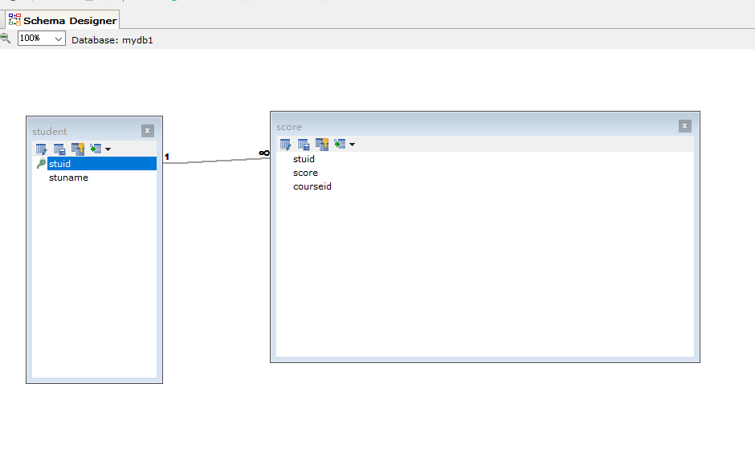 整个的sql语句
1 2 3 4 5 6 7 8 9 10 11 12 13 14 15 16 17 18 19 20 21 22 23 24 25 26 27 28 29 30 31 32 33 34 35 36 37 38 39 40 41 42 43 44 45 46 47 48 49 50 51 52 53 54 55 56 57 58 59 60 61 62 63 64 65 66 67 68 69 70 71 72 73 74 75 76 77 78 79 80 81 82 83 84 85 86 87 88 89 90 91 92 93 94 95 96 97 98 99 100 101 102 103 104 105 106 107 108 109 110 111 112 113 114 115 116 117 118 119 120 121 122 123 124 125 126 127 128 129 130 | -- 数据完整性 -- 1.1主键约束（primary key） PRIMARY KEY对id进行约束,id就是主键 -- 第一种添加方式： CREATE TABLE student( id INT PRIMARY KEY, NAME VARCHAR(50) ); -- 删除表 DROP TABLE student1; -- 第二种创建主键的方式 -- 主键写到函数中 CREATE TABLE student( id INT, NAME VARCHAR(50), PRIMARY KEY(id) ); #主键直接方法primary key()的函数中 -- 使用联合主键 #这里就可以使用联合主键(不可分割)类似于二进制 USE mydb1; CREATE TABLE student( classid INT, stuid INT, NAME VARCHAR(50), PRIMARY KEY(classid,stuid) ); -- 第三种创建主键的方式 DROP TABLE student; -- 先创建再修改 CREATE TABLE student( id INT, NAME VARCHAR(50) ); ALTER TABLE student ADD PRIMARY KEY (id); #添加主键约束(id) -- 1.2唯一约束(unique)： -- 特点：数据不能重复。 DROP TABLE student; CREATE TABLE student( Id INT PRIMARY KEY, NAME VARCHAR(50) UNIQUE ); #可以有空值,但是不能有多个,但是不能重复 -- 1.3自动增长列(auto_increment) (删除的数据依旧会占着这个id,新插入的只会自动增长) DROP TABLE student; CREATE TABLE student( Id INT PRIMARY KEY AUTO_INCREMENT, NAME VARCHAR(50) ); INSERT INTO student(NAME) VALUES('tom'); -- 2、域完整性 -- 1.2 非空约束：not null DROP TABLE student; CREATE TABLE student( Id INT PRIMARY KEY, NAME VARCHAR(50) NOT NULL, Sex VARCHAR(10) ); INSERT INTO student VALUES(1,'tom',NULL); -- 1.3 默认值约束 default DROP TABLE student; CREATE TABLE student( Id INT PRIMARY KEY, NAME VARCHAR(50) NOT NULL, Sex VARCHAR(10) DEFAULT '男' ); INSERT INTO student VALUES(1,'tom','女'); INSERT INTO student VALUES(2,'jerry',DEFAULT); #默认值要加上default -- 3、引用完整性（参照完整性） -- 外键约束：FOREIGN KEY CREATE TABLE stu1( sid INT PRIMARY KEY, NAME VARCHAR(50) NOT NULL, sex VARCHAR(10) DEFAULT '男' ); -- CONSTRAINT fk_stu1_score1_sid FOREIGN KEY (sid) REFERENCES student(id) -- 一个约束,约束的名字叫fk_stu1_score1_sid 是外键约束sid 参照学生表stu1的sid CREATE TABLE score1( id INT, score INT, sid INT , -- 外键列的数据类型一定要与主键的类型一致 CONSTRAINT fk_stu1_score1_sid FOREIGN KEY (sid) REFERENCES stu1(sid) ); -- 4、 表与表之间的关系 -- 学生表先创建主表 DROP TABLE student; CREATE TABLE student( stuid VARCHAR(10) PRIMARY KEY, stuname VARCHAR(50) ); -- 分数表 CREATE TABLE score( stuid VARCHAR(10), score INT, courseid INT, CONSTRAINT fk_stu_sco FOREIGN KEY(stuid) REFERENCES student(stuid) ); -- DROP TABLE score; SELECT * FROM student; INSERT INTO student VALUES('1001','张三峰'); INSERT INTO student VALUES('1002','张无忌'); INSERT INTO student VALUES('1003','王尼玛'); INSERT INTO student VALUES('1004','王老五'); SELECT * FROM score; INSERT INTO score VALUES('1001',98,1); INSERT INTO score VALUES('1002',95,1); INSERT INTO score VALUES('1002',67,2); INSERT INTO score VALUES('1003',83,2); INSERT INTO score VALUES('1003',57,3); SELECT * FROM student s,score c WHERE s.stuid=c.stuid; SELECT * FROM student s LEFT JOIN score c ON s.stuid=c.stuid; |
4、 表与表之间的关系¶
-
一对一：例如t_person表和t_card表，即人和身份证。这种情况需要找出主从关系，即谁是主表，谁是从表。人可以没有身份证，但身份证必须要有人才行，所以人是主表，而身份证是从表。设计从表可以有两种方案：
Ø 在t_card表中添加外键列（相对t_user表），并且给外键添加唯一约束；
Ø 给t_card表的主键添加外键约束（相对t_user表），即t_card表的主键也是外键。
-
一对多（多对一）：最为常见的就是一对多！一对多和多对一，这是从哪个角度去看得出来的。t_user和t_section的关系，从t_user来看就是一对多，而从t_section的角度来看就是多对一！这种情况都是在多方创建外键！
-
多对多：例如t_stu和t_teacher表，即一个学生可以有多个老师，而一个老师也可以有多个学生。这种情况通常需要创建中间表来处理多对多关系。例如再创建一张表t_stu_tea表，给出两个外键，一个相对t_stu表的外键，另一个相对t_teacher表的外键。
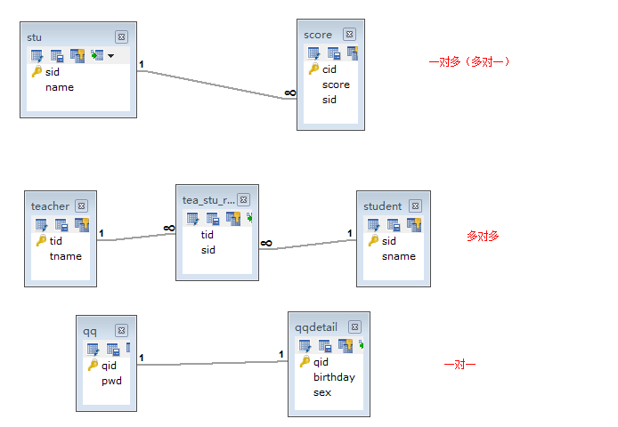 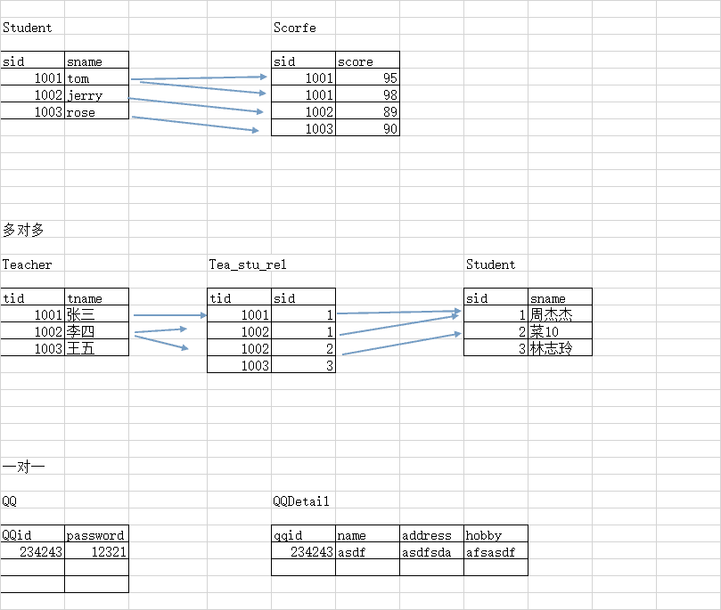
1 2 3 4 5 6 7 8 9 10 11 12 13 14 15 16 17 18 19 20 21 22 23 24 25 26 27 28 29 30 31 32 33 34 35 36 37 | -- 多对多的关系 use mydb1; -- 老师表 create table teacher( tid int primary key, tname varchar(20) ); -- 学生表 create table stu2( sid int primary key, sname varchar(20) ); -- 外键表 create table tea_stu_rel( tid int, sid int ); -- 修改外键的表,添加外键 alter table tea_stu_rel add constraint fk_tid foreign key(tid) references teacher(tid); ALTER TABLE tea_stu_rel ADD CONSTRAINT fk_sid FOREIGN KEY(sid) REFERENCES stu2(sid); -- 一对一 -- QQ表 create table QQ( qqid int primary key, password varchar(50) ); -- 详细信息 create table QQDetail( qqid int primary key, name varchar(50), address varchar(200) ); alter table QQDetail add constraint fk_QQ foreign key(qqid) references QQ(qqid); |
拆表是方便查询存储方便,同时可以去除冗余（主要是为了去除大量的冗余数据，但是并不是拆表越多越好） 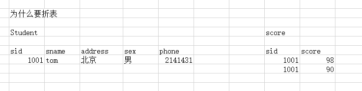
六、多表查询（重要）¶
多表查询有如下几种：
-
合并结果集；UNION 、 UNION ALL
-
连接查询
- 内连接 [INNER] JOIN ON
- 外连接 OUTER JOIN ON
- 左外连接 LEFT [OUTER] JOIN
- 右外连接 RIGHT [OUTER] JOIN
- 全外连接（MySQL不支持）FULL JOIN
- 自然连接 NATURAL JOIN
-
子查询
```sql -- ------------联合查询------------------ USE mydb1; CREATE TABLE A( NAME VARCHAR(10), score INT )
CREATE TABLE B( NAME VARCHAR(10), score INT )
INSERT INTO A VALUES('a',10),('b',20),('c',30); INSERT INTO B VALUES('a',10),('b',20),('d',40); ```
1 合并结果集¶
-
作用：合并结果集就是把两个select语句的查询结果合并到一起！
-
合并结果集有两种方式：
-
UNION：去除重复记录，例如：SELECT * FROM t1 UNION SELECT * FROM t2；
1 2 3 4 | -- 合并结果集 SELECT *FROM A UNION SELECT *FROM B; |
- UNION ALL：不去除重复记录，例如：SELECT * FROM t1 UNION ALL SELECT * FROM t2。
1 2 3 4 | -- 合并结果集 SELECT *FROM A UNION ALL SELECT *FROM B; |
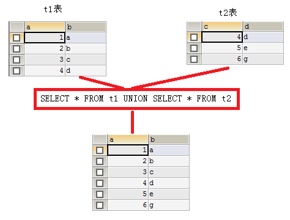 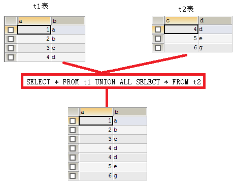
- 要求：被合并的两个结果：列数、列类型必须相同。
2 连接查询 （非常重要）¶
连接查询就是求出多个表的乘积，例如t1连接t2，那么查询出的结果就是t1*t2。
1 2 | -- 笛卡尔积的表 SELECT * FROM student,score; |
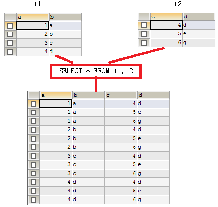
连接查询会产生笛卡尔积，假设集合A={a,b}，集合B={0,1,2}，则两个集合的笛卡尔积为{(a,0),(a,1),(a,2),(b,0),(b,1),(b,2)}。可以扩展到多个集合的情况。
那么多表查询产生这样的结果并不是我们想要的，那么怎么去除重复的，不想要的记录呢，当然是通过条件过滤。通常要查询的多个表之间都存在关联关系，那么就通过关联关系去除笛卡尔积。
你能想像到emp和dept表连接查询的结果么？emp一共14行记录，dept表一共4行记录，那么连接后查询出的结果是56行记录。
也就你只是想在查询emp表的同时，把每个员工的所在部门信息显示出来，那么就需要使用主外键来去除无用信息了。
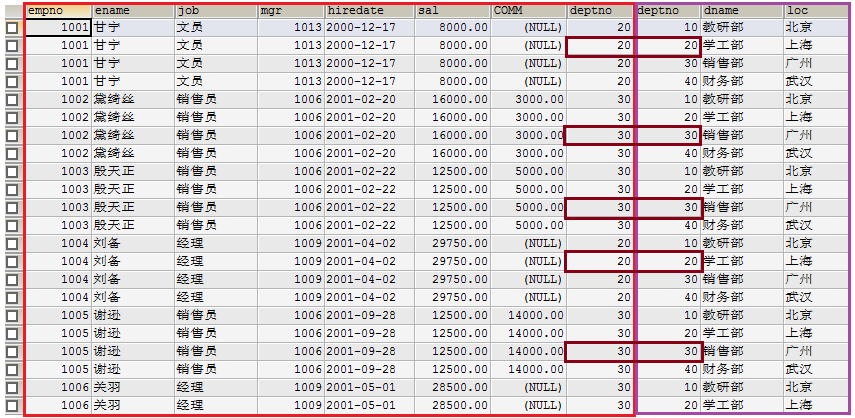 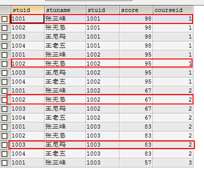
使用主外键关系做为条件来去除无用信息
1 2 | -- 使用主外键关系作为条件删除无用信息 SELECT * FROM emp,dept WHERE emp.deptno=dept.deptno; |
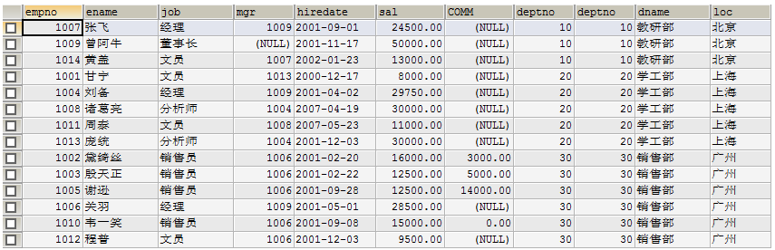
上面查询结果会把两张表的所有列都查询出来，也许你不需要那么多列，这时就可以指定要查询的列了。
1 2 3 | SELECT emp.ename,emp.sal,emp.comm,dept.dname FROM emp,dept WHERE emp.deptno=dept.deptno; |
在多表查询中，在使用列时必须指定列所从属的表，例如emp.deptno表示emp表的deptno列。
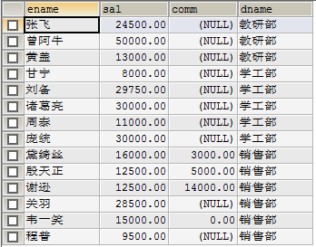
还可以为表指定别名，然后在引用列时使用别名即可。（其中AS是可以省略的）
1 2 3 4 | -- 为表指定别名,方便书写(as 放在from表的后面) SELECT e.ename,e.sal,e.comm,d.dname FROM emp AS e,dept AS d WHERE e.deptno=d.deptno; |
2.1 内连接
上面的连接语句就是内连接，但它不是SQL标准中的查询方式，可以理解为方言！SQL标准的内连接为：
sql
SELECT *
FROM emp e
INNER JOIN dept d
ON e.deptno=d.deptno;
INNER可以省略，MySQL默认的连接方式就是内连接
不使用WHERE，而是使用ON
内连接的特点：查询结果必须满足条件。例如我们向emp表中插入一条记录：
其中deptno为50，而在dept表中只有10、20、30、40部门，那么上面的查询结果中就不会出现“张三”这条记录，因为它不能满足e.deptno=d.deptno这个条件。
sql
-- 下面两条语句是一样的
SELECT s.stuid,s.stuname,c.score FROM student s JOIN score c ON s.stuid=c.stuid;
SELECT s.stuid,s.stuname,c.score FROM student s , score c WHERE s.stuid=c.stuid;
2.2 外连接（左连接、右连接）
外连接的特点：查询出的结果存在不满足条件的可能。
左连接：
1 2 3 | SELECT * FROM emp e LEFT OUTER JOIN dept d ON e.deptno=d.deptno; |
1 2 3 4 | -- 外连接查询 -- 左连接 SELECT s.stuid,s.stuname,c.score FROM student s LEFT JOIN score c ON s.stuid=c.stuid; SELECT s.stuid,s.stuname,c.score FROM student s LEFT JOIN score c ON s.stuid=c.stuid; |
左连接是先查询出左表（即以左表为主），然后查询右表，右表中满足条件的显示出来，不满足条件的显示NULL。
这么说你可能不太明白，我们还是用上面的例子来说明。其中emp表中“张三”这条记录中，部门编号为50，而dept表中不存在部门编号为50的记录，所以“张三”这条记录，不能满足e.deptno=d.deptno这条件。但在左连接中，因为emp表是左表，所以左表中的记录都会查询出来，即“张三”这条记录也会查出，但相应的右表部分显示NULL。
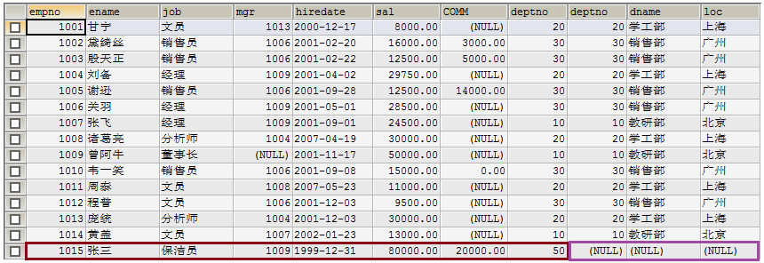
2.3 右连接
右连接就是先把右表中所有记录都查询出来，然后左表满足条件的显示，不满足显示NULL。例如在dept表中的40部门并不存在员工，但在右连接中，如果dept表为右表，那么还是会查出40部门，但相应的员工信息为NULL。
1 2 3 | SELECT * FROM emp e RIGHT OUTER JOIN dept d ON e.deptno=d.deptno; |
1 | SELECT s.stuid,s.stuname,c.score FROM student s RIGHT OUTER JOIN score c ON s.stuid=c.stuid; |
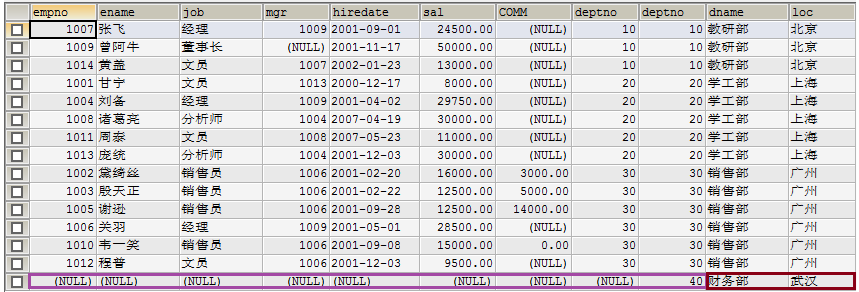
连接查询心得：
连接不限与两张表，连接查询也可以是三张、四张，甚至N张表的连接查询。通常连接查询不可能需要整个笛卡尔积，而只是需要其中一部分，那么这时就需要使用条件来去除不需要的记录。这个条件大多数情况下都是使用主外键关系去除。
两张表的连接查询一定有一个主外键关系，三张表的连接查询就一定有两个主外键关系，所以在大家不是很熟悉连接查询时，首先要学会去除无用笛卡尔积，那么就是用主外键关系作为条件来处理。如果两张表的查询，那么至少有一个主外键条件，三张表连接至少有两个主外键条件*。*
```sql -- 多表查询 CREATE TABLE course( courseid INT PRIMARY KEY, cname VARCHAR(50) );
SELECT s.stuid,s.stuname,c.score,cc.cname FROM student s,score c,course cc WHERE s.stuid = c.stuid AND c.courseid = cc.courseid; -- 使用内连接(只要主外键的关系分清楚就好了) SELECT * FROM student s JOIN score c ON s.stuid=c.stuid JOIN course cc ON c.courseid=cc.courseid; ```
3 自然连接¶
大家也都知道，连接查询会产生无用笛卡尔积，我们通常使用主外键关系等式来去除它。而自然连接无需你去给出主外键等式，它会自动找到这一等式：
- 两张连接的表中名称和类型完全一致的列作为条件，例如emp和dept表都存在deptno列，并且类型一致，所以会被自然连接找到！（natural join 自然连接 ）
当然自然连接还有其他的查找条件的方式，但其他方式都可能存在问题！
1 2 3 | SELECT * FROM emp NATURAL JOIN dept; SELECT * FROM emp NATURAL LEFT JOIN dept; SELECT * FROM emp NATURAL RIGHT JOIN dept; |
4 子查询（非常重要）¶
一个select语句中包含另一个完整的select语句。
子查询就是嵌套查询，即SELECT中包含SELECT，如果一条语句中存在两个，或两个以上SELECT，那么就是子查询语句了。
1 2 3 | -- 4 子查询（非常重要） -- 查询与scott 同一个部门的员工 SELECT * FROM emp WHERE deptno=(SELECT deptno FROM emp WHERE ename='SCOTT'); |
-
子查询出现的位置：
- where后，作为条为被查询的一条件的一部分；
- from后，作表；
-
当子查询出现在where后作为条件时，还可以使用如下关键字：
- any
- all
-
子查询结果集的形式：
- 单行单列（用于条件）
-
单行多列（用于条件）
- 多行单列（用于条件）
- 多行多列（用于表）
练习：
1. **工资高于JONES**的员工。
分析：
查询条件：工资>JONES工资，其中JONES工资需要一条子查询。
第一步：查询JONES的工资
1 | SELECT sal FROM emp WHERE ename='JONES' |
第二步：查询高于甘宁工资的员工
sql
SELECT * FROM emp WHERE sal > (${第一步})
结果：
1 | SELECT * FROM emp WHERE sal > (SELECT sal FROM emp WHERE ename='JONES') |
2、查询与SCOTT同一个部门的员工。
-
子查询作为条件
-
子查询形式为单行单列
3、工资高于30号部门所有人的员工信息
分析：
1 | SELECT * FROM emp WHERE sal>(SELECT MAX(sal) FROM emp WHERE deptno=30); |
查询条件：工资高于30部门所有人工资，其中30部门所有人工资是子查询。高于所有需要使用all关键字。
第一步：查询30部门所有人工资
1 | SELECT sal FROM emp WHERE deptno=30; |
第二步：查询高于30部门所有人工资的员工信息
1 | SELECT * FROM emp WHERE sal > ALL (${第一步}) |
结果：
sql
SELECT * FROM emp WHERE sal > ALL (SELECT sal FROM emp WHERE deptno=30)
-
子查询作为条件
-
子查询形式为多行单列（当子查询结果集形式为多行单列时可以使用ALL或ANY关键字）
sql
-- 3、工资高于30号部门所有人的员工信息
SELECT * FROM emp WHERE sal>(SELECT MAX(sal) FROM emp WHERE deptno=30);
-- 用的不多
SELECT * FROM emp WHERE sal > ALL (SELECT sal FROM emp WHERE deptno=30);
4、查询工作和工资与MARTIN（马丁）完全相同的员工信息
分析：
查询条件：工作和工资与MARTIN完全相同，这是子查询
第一步：查询出MARTIN的工作和工资
1 | SELECT job,sal FROM emp WHERE ename='MARTIN'; |
第二步：查询出与MARTIN工作和工资相同的人(单行多列用括号,多个值用in)
1 | SELECT * FROM emp WHERE (job,sal) IN (${第一步}); |
结果：
1 | SELECT * FROM emp WHERE (job,sal) IN (SELECT job,sal FROM emp WHERE ename='MARTIN'); |
5、有2个以上直接下属的员工信息
1 | SELECT * FROM emp WHERE empno IN(SELECT mgr FROM emp GROUP BY mgr HAVING COUNT(mgr)>=2); |
-
子查询作为条件
-
子查询形式为单行多列
sql
-- 5、有2个以上直接下属的员工信息
SELECT * FROM emp WHERE empno IN(SELECT mgr FROM emp GROUP BY mgr HAVING COUNT(mgr)>=2);
SELECT mgr FROM emp GROUP BY mgr HAVING COUNT(mgr)>=2;
5、查询员工编号为7788的员工名称、员工工资、部门名称、部门地址
分析：（无需子查询）
查询列：员工名称、员工工资、部门名称、部门地址
查询表：emp和dept，分析得出，不需要外连接（外连接的特性：某一行（或某些行）记录上会出现一半有值，一半为NULL值）
条件：员工编号为**7788**
第一步：去除多表，只查一张表，这里去除部门表，只查员工表
sql
SELECT ename, sal FROM emp e WHERE empno=7788;
第二步：让第一步与dept做内连接查询，添加主外键条件去除无用笛卡尔积
sql
SELECT e.ename, e.sal, d.dname, d.loc
FROM emp e, dept d
WHERE e.deptno=d.deptno AND empno=7788
第二步中的dept表表示所有行所有列的一张完整的表，这里可以把dept替换成所有行，但只有dname和loc列的表，这需要子查询。
第三步：查询dept表中dname和loc两列，因为deptno会被作为条件，用来去除无用笛卡尔积，所以需要查询它。
1 | SELECT dname,loc,deptno FROM dept; |
第四步：替换第二步中的dept
1 2 3 | SELECT e.ename, e.sal, d.dname, d.loc FROM emp e, (SELECT dname,loc,deptno FROM dept) d WHERE e.deptno=d.deptno AND e.empno=7788 |
-
子查询作为表
-
子查询形式为多行多列
6、自连接:自己连接自己，起别名¶
求7369员工编号、姓名、经理编号和经理姓名
1 | SELECT e1.empno , e1.ename,e2.mgr,e2.ename FROM emp e1, emp e2 WHERE e1.mgr = e2.empno AND e1.empno = 7369; |
练习：
求各个部门薪水最高的员工所有信息
1 2 3 4 5 6 | --部门最高工资 SELECT * FROM emp e,(SELECT MAX(sal) maxsal,deptno FROM emp GROUP BY deptno) a WHERE e.deptno = a.deptno AND e.sal =a.maxsal; |
MAX(sal) maxsal 重命名
(SELECT MAX(sal) maxsal,deptno FROM emp GROUP BY deptno) a 重命名a
七、MySQL中的函数¶
合计函数－count¶
- Count(列名)返回某一列，行的总数
1 2 | Select count(*)|count(列名) from tablename [WHERE where_definition] |
合计函数－SUM¶
- Sum函数返回满足where条件的行的和
1 2 | Select sum(列名)｛,sum(列名)…｝ from tablename [WHERE where_definition] |
注意：sum仅对数值起作用，否则会报错。
注意：对多列求和，“，”号不能少。
合计函数－AVG¶
- AVG函数返回满足where条件的一列的平均值
1 2 | Select avg(列名)｛,avg(列名)…｝ from tablename [WHERE where_definition] |
合计函数－MAX/MIN¶
- Max/min函数返回满足where条件的一列的最大/最小值
1 2 | Select max(列名) from tablename [WHERE where_definition] |
时间日期相关函数¶
| ADDTIME (date2 ,time_interval ) | 将time_interval加到date2 |
|---|---|
| CURRENT_DATE ( ) | 当前日期 |
| CURRENT_TIME ( ) | 当前时间 |
| CURRENT_TIMESTAMP ( ) | 当前时间戳 |
| DATE (datetime ) | 返回datetime的日期部分 |
| DATE_ADD (date2 , INTERVAL d_value d_type ) | 在date2中加上日期或时间 |
| DATE_SUB (date2 , INTERVAL d_value d_type ) | 在date2上减去一个时间 |
| DATEDIFF (date1 ,date2 ) | 两个日期差 |
| NOW ( ) | 当前时间 |
| YEAR|Month|Day(datetime ) | 年月日 |
示例：select addtime(‘02:30:30’,‘01:01:01’); 注意：字符串、时间日期的引号问题
select date_add(entry_date,INTERVAL 2 year) from student;／／增加两年
select addtime(time,‘1 1-1 10:09:09’) from student;／／时间戳上增加，注意年后没有 -
1 2 3 4 5 6 7 8 9 10 11 12 13 14 15 16 17 18 19 20 | -- mysql函数 -- 注意：字符串、时间日期的引号问题 SELECT ADDTIME ('02:30:30','01:01:01'); -- 当前日期 SELECT CURRENT_DATE(); -- 当前时间 SELECT CURRENT_TIME(); -- 当前时间戳 SELECT CURRENT_TIMESTAMP(); -- 返回当前的年份 SELECT YEAR(NOW()); -- 返回当前的日期时间 SELECT NOW(); -- 返回当前的月份 SELECT MONTH(NOW()); -- 返回当前的日 SELECT DAY(NOW()); -- 当前日期增加一个月 SELECT DATE_ADD(NOW(),INTERVAL 1 MONTH); |
字符串相关函数¶
| CHARSET(str) | 返回字串字符集 |
|---|---|
| CONCAT (string2 [,... ]) | 连接字串 |
| INSTR (string ,substring ) | 返回substring在string中出现的位置,没有返回0 |
| UCASE (string2 ) | 转换成大写 |
| LCASE (string2 ) | 转换成小写 |
| LEFT (string2 ,length ) | 从string2中的左边起取length个字符 |
| LENGTH (string ) | string长度 |
| REPLACE (str ,search_str ,replace_str ) | 在str中用replace_str替换search_str |
| STRCMP (string1 ,string2 ) | 逐字符比较两字串大小, |
| SUBSTRING (str , position [,length ]) | 从str的position开始,取length个字符 |
| LTRIM (string2 ) RTRIM (string2 ) trim | 去除前端空格或后端空格 |
1 2 3 4 5 6 7 8 9 10 11 | -- 字符串相关函数 -- 返回字串字符集 SELECT CHARSET('tom'); -- 链接字符串 SELECT CONCAT('aaa','bbb'); -- 返回substring在string中出现的位置,没有返回0,从1开始 SELECT INSTR('admin','d'); -- 字符替换 SELECT REPLACE('black','ack','ccc'); -- 逐字符比较两个字符串的大小 SELECT STRCMP('ab','ad'); |
数学相关函数¶
| ABS (number2 ) | 绝对值 |
|---|---|
| BIN (decimal_number ) | 十进制转二进制 |
| CEILING (number2 ) | 向上取整 |
| CONV(number2,from_base,to_base) | 进制转换 |
| FLOOR (number2 ) | 向下取整 |
| FORMAT (number,decimal_places ) | 保留小数位数 |
| HEX (DecimalNumber ) | 转十六进制 |
| LEAST (number , number2 [,..]) | 求最小值 |
| MOD (numerator ,denominator ) | 求余 |
| RAND([seed]) | RAND([seed]) |
整个的sql
1 2 3 4 5 6 7 8 9 10 11 12 13 14 15 16 17 18 19 20 21 22 23 24 25 26 27 28 29 30 31 32 33 34 35 36 37 38 39 40 41 42 43 44 45 46 47 48 49 50 51 52 53 54 55 56 57 58 59 60 61 62 63 64 65 66 67 68 69 70 71 72 73 74 75 76 77 78 79 80 81 82 83 84 85 86 87 88 89 90 91 92 93 94 95 96 97 98 99 100 101 102 103 104 105 106 107 108 109 110 111 112 113 114 115 116 117 118 119 120 121 122 123 124 125 126 127 128 129 130 131 132 133 134 135 136 137 138 139 140 141 142 143 144 145 146 147 148 149 150 151 152 153 154 155 156 157 158 159 160 161 162 163 164 165 166 167 168 169 170 171 172 173 174 175 176 177 178 179 180 181 182 183 184 185 186 187 188 189 190 191 192 193 194 195 196 197 198 199 200 201 202 203 204 205 206 207 208 209 210 211 212 213 214 215 216 217 218 219 220 221 222 223 224 225 226 227 228 229 230 231 232 233 234 235 236 237 238 239 240 241 242 243 244 245 246 247 248 249 250 251 252 253 254 255 256 257 258 259 260 261 262 263 264 265 266 267 268 269 270 271 272 273 274 275 276 | -- 数据完整性 -- 1.1主键约束（primary key） PRIMARY KEY对id进行约束,id就是主键 -- 第一种添加方式： CREATE TABLE student( id INT PRIMARY KEY, NAME VARCHAR(50) ); -- 删除表 DROP TABLE student1; -- 第二种创建主键的方式 -- 主键写到函数中 CREATE TABLE student( id INT, NAME VARCHAR(50), PRIMARY KEY(id) ); #主键直接方法primary key()的函数中 -- 使用联合主键 #这里就可以使用联合主键(不可分割)类似于二进制 USE mydb1; CREATE TABLE student( classid INT, stuid INT, NAME VARCHAR(50), PRIMARY KEY(classid,stuid) ); -- 第三种创建主键的方式 DROP TABLE student; -- 先创建再修改 CREATE TABLE student( id INT, NAME VARCHAR(50) ); ALTER TABLE student ADD PRIMARY KEY (id); #添加主键约束(id) -- 1.2唯一约束(unique)： -- 特点：数据不能重复。 DROP TABLE student; CREATE TABLE student( Id INT PRIMARY KEY, NAME VARCHAR(50) UNIQUE ); #可以有空值,但是不能有多个,但是不能重复 -- 1.3自动增长列(auto_increment) (删除的数据依旧会占着这个id,新插入的只会自动增长) DROP TABLE student; CREATE TABLE student( Id INT PRIMARY KEY AUTO_INCREMENT, NAME VARCHAR(50) ); INSERT INTO student(NAME) VALUES('tom'); -- 2、域完整性 -- 1.2 非空约束：not null DROP TABLE student; CREATE TABLE student( Id INT PRIMARY KEY, NAME VARCHAR(50) NOT NULL, Sex VARCHAR(10) ); INSERT INTO student VALUES(1,'tom',NULL); -- 1.3 默认值约束 default DROP TABLE student; CREATE TABLE student( Id INT PRIMARY KEY, NAME VARCHAR(50) NOT NULL, Sex VARCHAR(10) DEFAULT '男' ); INSERT INTO student VALUES(1,'tom','女'); INSERT INTO student VALUES(2,'jerry',DEFAULT); #默认值要加上default -- 3、引用完整性（参照完整性） -- 外键约束：FOREIGN KEY CREATE TABLE stu1( sid INT PRIMARY KEY, NAME VARCHAR(50) NOT NULL, sex VARCHAR(10) DEFAULT '男' ); -- CONSTRAINT fk_stu1_score1_sid FOREIGN KEY (sid) REFERENCES student(id) -- 一个约束,约束的名字叫fk_stu1_score1_sid 是外键约束sid 参照学生表stu1的sid CREATE TABLE score1( id INT, score INT, sid INT , -- 外键列的数据类型一定要与主键的类型一致 CONSTRAINT fk_stu1_score1_sid FOREIGN KEY (sid) REFERENCES stu1(sid) ); -- 4、 表与表之间的关系 -- 学生表先创建主表 DROP TABLE student; CREATE TABLE student( stuid VARCHAR(10) PRIMARY KEY, stuname VARCHAR(50) ); -- 分数表 CREATE TABLE score( stuid VARCHAR(10), score INT, courseid INT, CONSTRAINT fk_stu_sco FOREIGN KEY(stuid) REFERENCES student(stuid) ); -- DROP TABLE score; SELECT * FROM student; INSERT INTO student VALUES('1001','张三峰'); INSERT INTO student VALUES('1002','张无忌'); INSERT INTO student VALUES('1003','王尼玛'); INSERT INTO student VALUES('1004','王老五'); SELECT * FROM score; INSERT INTO score VALUES('1001',98,1); INSERT INTO score VALUES('1002',95,1); INSERT INTO score VALUES('1002',67,2); INSERT INTO score VALUES('1003',83,2); INSERT INTO score VALUES('1003',57,3); SELECT * FROM student s,score c WHERE s.stuid=c.stuid; SELECT * FROM student s LEFT JOIN score c ON s.stuid=c.stuid; -- ----------六 多表查询---------------- -- ------------联合查询------------------ CREATE TABLE A( NAME VARCHAR(10), score INT ) CREATE TABLE B( NAME VARCHAR(10), score INT ) INSERT INTO A VALUES('a',10),('b',20),('c',30); INSERT INTO B VALUES('a',10),('b',20),('d',40); -- 合并结果集 SELECT *FROM A UNION SELECT *FROM B; -- 合并结果集 SELECT *FROM A UNION ALL SELECT *FROM B; -- 连接查询 USE mydb1; -- 笛卡尔积的表 SELECT * FROM student,score; -- 使用主外键关系作为条件删除无用信息 SELECT * FROM emp,dept WHERE emp.deptno=dept.deptno; -- 这时就可以指定要查询的列了 SELECT emp.ename,emp.sal,emp.comm,dept.dname FROM emp,dept WHERE emp.deptno=dept.deptno; -- 为表指定别名,方便书写(as 放在from表的后面) SELECT e.ename,e.sal,e.comm,d.dname FROM emp AS e,dept AS d WHERE e.deptno=d.deptno; -- 2.1 内连接 SELECT * FROM emp e INNER JOIN dept d ON e.deptno=d.deptno; -- 下面两条语句是一样的 SELECT s.stuid,s.stuname,c.score FROM student s JOIN score c ON s.stuid=c.stuid; SELECT s.stuid,s.stuname,c.score FROM student s , score c WHERE s.stuid=c.stuid; -- 外连接查询 -- 左连接 SELECT s.stuid,s.stuname,c.score FROM student s LEFT JOIN score c ON s.stuid=c.stuid; SELECT s.stuid,s.stuname,c.score FROM student s LEFT JOIN score c ON s.stuid=c.stuid; -- 右 外连接 SELECT s.stuid,s.stuname,c.score FROM student s RIGHT OUTER JOIN score c ON s.stuid=c.stuid; -- 多表查询 CREATE TABLE course( courseid INT PRIMARY KEY, cname VARCHAR(50) ); SELECT s.stuid,s.stuname,c.score,cc.cname FROM student s,score c,course cc WHERE s.stuid = c.stuid AND c.courseid = cc.courseid; -- 使用内连接(只要主外键的关系分清楚就好了) SELECT * FROM student s JOIN score c ON s.stuid=c.stuid JOIN course cc ON c.courseid=cc.courseid; -- 自然连接 SELECT * FROM emp NATURAL JOIN dept; SELECT * FROM emp NATURAL LEFT JOIN dept; SELECT * FROM emp NATURAL RIGHT JOIN dept; -- 4 子查询（非常重要） -- 查询与scott 同一个部门的员工 SELECT * FROM emp WHERE deptno=(SELECT deptno FROM emp WHERE ename='SCOTT'); -- 工资高于JONES的员工。 SELECT * FROM emp WHERE sal > (SELECT sal FROM emp WHERE ename='JONES') -- 3、工资高于30号部门所有人的员工信息 SELECT * FROM emp WHERE sal>(SELECT MAX(sal) FROM emp WHERE deptno=30); -- 用的不多 SELECT * FROM emp WHERE sal > ALL (SELECT sal FROM emp WHERE deptno=30); -- 4、查询工作和工资与MARTIN（马丁）完全相同的员工信息 SELECT * FROM emp WHERE (job,sal) IN (SELECT job,sal FROM emp WHERE ename='MARTIN'); -- 5、有2个以上直接下属的员工信息 SELECT * FROM emp WHERE empno IN(SELECT mgr FROM emp GROUP BY mgr HAVING COUNT(mgr)>=2); SELECT mgr FROM emp GROUP BY mgr HAVING COUNT(mgr)>=2; -- 5、查询员工编号为7788的员工名称、员工工资、部门名称、部门地址 SELECT e.ename, e.sal, d.dname, d.loc FROM emp e, (SELECT dname,loc,deptno FROM dept) d WHERE e.deptno=d.deptno AND e.empno=7788 ; -- 6、自连接:自己连接自己，起别名 -- 求7369员工编号、姓名、经理编号和经理姓名 SELECT e1.empno , e1.ename,e2.mgr,e2.ename FROM emp e1, emp e2 WHERE e1.mgr = e2.empno AND e1.empno = 7369; -- 部门最高工资 SELECT * FROM emp e,(SELECT MAX(sal) maxsal,deptno FROM emp GROUP BY deptno) a WHERE e.deptno = a.deptno AND e.sal =a.maxsal; -- mysql函数 -- 注意：字符串、时间日期的引号问题 SELECT ADDTIME ('02:30:30','01:01:01'); -- 当前日期 SELECT CURRENT_DATE(); -- 当前时间 SELECT CURRENT_TIME(); -- 当前时间戳 SELECT CURRENT_TIMESTAMP(); -- 返回当前的年份 SELECT YEAR(NOW()); -- 返回当前的日期时间 SELECT NOW(); -- 返回当前的月份 SELECT MONTH(NOW()); -- 返回当前的日 SELECT DAY(NOW()); -- 当前日期增加一个月 SELECT DATE_ADD(NOW(),INTERVAL 1 MONTH); -- 字符串相关函数 -- 返回字串字符集 SELECT CHARSET('tom'); -- 链接字符串 SELECT CONCAT('aaa','bbb'); -- 返回substring在string中出现的位置,没有返回0,从1开始 SELECT INSTR('admin','d'); -- 字符替换 SELECT REPLACE('black','ack','ccc'); -- 逐字符比较两个字符串的大小 SELECT STRCMP('ab','ad'); |
八、MySQL数据库的备份与恢复¶
1 生成SQL脚本 导出数据¶
在控制台使用mysqldump命令可以用来生成指定数据库的脚本文本，但要注意，脚本文本中只包含数据库的内容，而不会存在创建数据库的语句！所以在恢复数据时，还需要自已手动创建一个数据库之后再去恢复数据。
sql
mysqldump –u用户名 –p密码 数据库名>生成的脚本文件路径
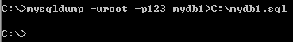
现在可以在C盘下找到mydb1.sql文件了！
注意，mysqldump命令是在Windows控制台下执行，无需登录mysql！！！
2 执行SQL脚本 恢复数据¶
前提：必须先创建数据库名
**执行SQL**脚本需要登录mysql，然后进入指定数据库，才可以执行SQL脚本！！！
执行SQL脚本不只是用来恢复数据库，也可以在平时编写SQL脚本，然后使用执行SQL 脚本来操作数据库！大家都知道，在黑屏下编写SQL语句时，就算发现了错误，可能也不能修改了。所以我建议大家使用脚本文件来编写SQL代码，然后执行之！
1 | SOURCE C:\mydb1.sql |
注意，在执行脚本时需要先行核查当前数据库中的表是否与脚本文件中的语句有冲突！例如在脚本文件中存在create table a的语句，而当前数据库中已经存在了a表，那么就会出错！
还可以通过下面的方式来执行脚本文件：
1 | mysql -uroot -p123 mydb1<c:\mydb1.sql |
1 | mysql –u用户名 –p密码 数据库<要执行脚本文件路径 |
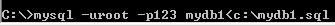
这种方式无需登录mysql！
注意：在CMD**下 **命令不能加;